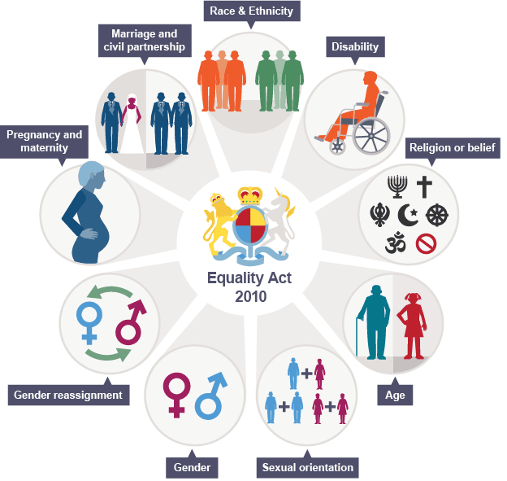

The Equality Act 2010, often erroneously called the Equalities Act 2010, is an act of Parliament of the United Kingdom passed during the Brown ministry. The primary purpose of this act is to consolidate, update, and supplement the numerous prior Acts and Regulations that formed the basis of anti-discrimination law in the UK. It includes the Equal Pay Act 1970, the Sex Discrimination Act 1975, the Race Relations Act 1976, and the Disability Discrimination Act 1995.
